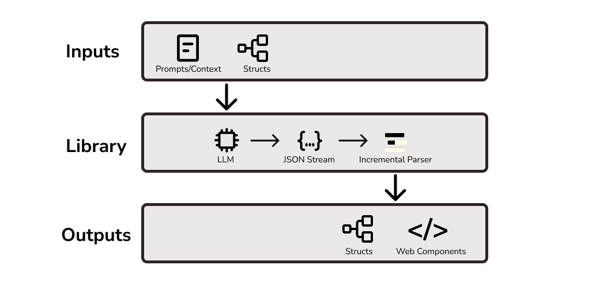

Structured Streamer¶


struct_strm (structured streamer) is a Python package that makes it easy to stream partial json generated by LLMs into valid json responses. This enables partial rendering of UI components without needing to wait for a full response, drastically reducing the time to the first word on the user's screen.
Why Use Structured Streamer?¶
JSON format is the standard when dealing with structured responses from LLMs. In the early days of LLM structured generation we had to validate the JSON response only after the whole JSON response had been returned. Modern approaches use constrained decoding to ensure that only valid json is returned, eliminating the need for post generation validation, and allowing us to use the response imediately. However, the streamed json response is incomplete, so it can't be parsed using traditional methods. This library aims to make it easier to handle this partially generated json to provide a better end user experience.
You can learn more about constrained decoding and context free grammar here: XGrammar - Achieving Efficient, Flexible, and Portable Structured Generation with XGrammar
Main Features¶
The primary feature is to wrap LLM outputs to produce valid incremental JSON from partial invalid JSON based on user provided structures. Effectively this acts as a wrapper for your LLM calls. Due to the nature of this library (it is primarily inteded for use in web servers), it is expected that it will be used in async workflows, and is async first.
The library also provides simple HTML templates that serve as examples of how you can integrate the streams in your own components.
Due to the nature of partial json streaming, there can be "wrong" ways to stream responses that are not effective for partial rendering of responeses in the UI. The library also provides examples of tested ways to apply the library to get good results.
High Level Flow

Example Component¶
This is an example of a form component being incrementally rendered. By using a structured query response from an LLM, in this case a form with form field names and field placeholders, we can stream the form results directly to a HTML component. This drastically reduces the time to first token, and the precieved time that a user needs to wait. More advanced components are under development.
1 2 3 4 5 6 7 8 9 10 11 12 13 14 15 16 17 18 19 | |
Contributing¶
Test¶
1 | |
Format¶
1 | |
Docs¶
1 | |
Other¶
I started struct_strm to support another project I'm working on to provide an easy entrypoint for Teachers to use LLM tools in their workflows. Check it out if you're interested - Teachers PET